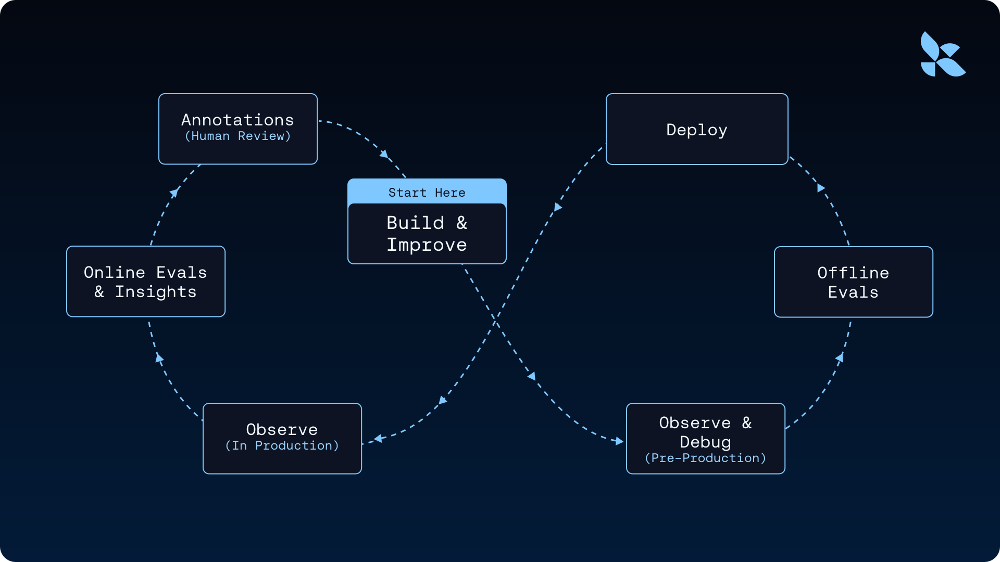
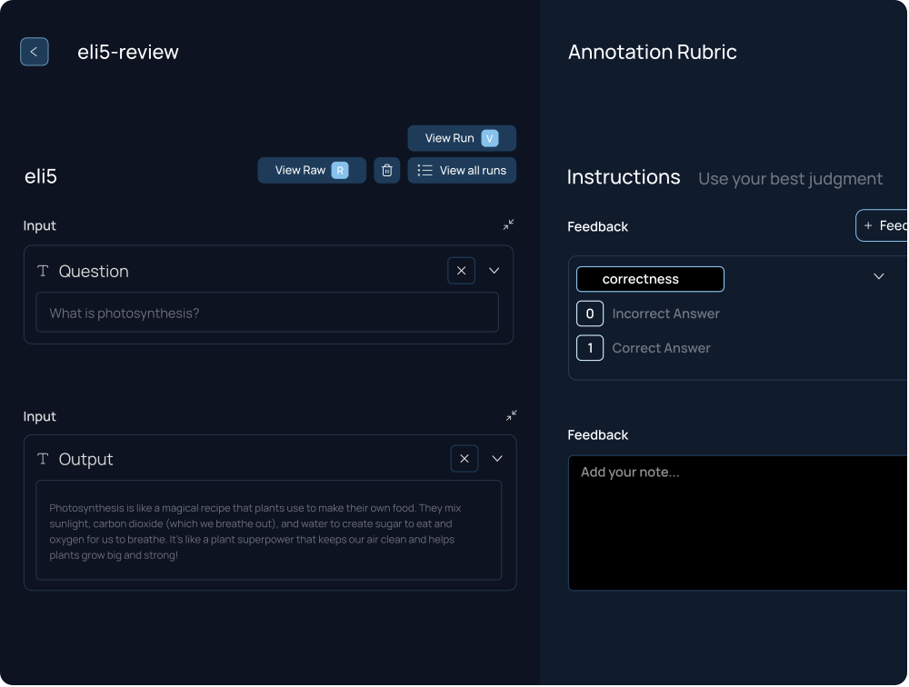

trace 是 agent 的事实记录
它记录一次运行的调用序列和中间输出，让团队知道 agent 在具体输入下实际做了什么。
Why：agent 出错时，代码只能说明它被允许做什么，不能说明某次运行实际发生了什么；系统性改进需要运行证据。 What：文章把 trace 定义为 agent improvement loop 的原材料：collect traces、enrich with evals/human feedback、identify patterns、make targeted changes、validate before shipping。 How：LangSmith 用 online evaluators、insights/reports、annotation queues 和 offline eval datasets 把 traces 转成可行动数据，再让工程师或 coding agents 改 prompt、context、orchestration 或模型。
agent 出错时，代码只能说明它被允许做什么，不能说明某次运行实际发生了什么；系统性改进需要运行证据。
文章把 trace 定义为 agent improvement loop 的原材料：collect traces、enrich with evals/human feedback、identify patterns、make targeted changes、validate before shipping。
LangSmith 用 online evaluators、insights/reports、annotation queues 和 offline eval datasets 把 traces 转成可行动数据，再让工程师或 coding agents 改 prompt、context、orchestration 或模型。

agent improvement loop 从 trace 开始。代码描述系统边界，trace 记录一次真实运行中每个 LLM call、tool invocation、retrieval step 和中间决策；LangSmith 再用评测、人工反馈、insights 和 offline evals 把这些记录变成可验证的改进循环。
它记录一次运行的调用序列和中间输出，让团队知道 agent 在具体输入下实际做了什么。
online evaluators、human review、recurring reports 和 annotation queues 给 traces 加上质量判断。
生产失败可以变成 dataset，用于验证 prompt、context、orchestration 或模型变更。
文章的循环是 collect、enrich、identify、change、validate。无论 trace 来自生产、staging、benchmark 还是本地开发，循环结构相同。
LangSmith 可以自动打分、聚类和生成报告；但 ambiguous failures、产品判断和高风险行为仍需要人工反馈进入 annotation queue。
当 enriched traces 指出可修复问题时，coding agents 可以读取失败案例并提出改动，但改动仍要通过 offline/online evals 验证。


| 标题 | The agent improvement loop starts with a trace |
| 日期 | March 31, 2026 |
| 作者 | Sam Crowder |
| 阅读时间 | 12 min |
| 分类 | Conceptual Guide, Observability & Evals, LangSmith |